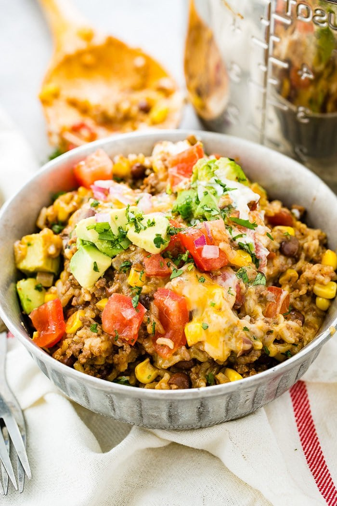

Instant Pot Burrito Bowls

Delicious Burrito Bowl Made FAST!
Just like a traditional burrito, this recipe is super versatile. Don't skip making it just because you are missing an ingredient.
Besides the salsa, anything on the ingredient list can be ommitted or swapped for something else!
INGREDIENTS
- 1 1/2 tablespoons canola or vegetable oil
- 1 medium yellow onion, diced
- 2 cloves garlic, minced
- 1 tablespoon chili powder
- 1 1/2 teaspoons ground cumin
- 1 cup low-sodium chicken broth, divided
- 1 1/2 pounds boneless, skinless chicken thighs, cut into 1-inch pieces
- Kosher salt
- Freshly ground black pepper
- 1 (15-ounce) can black beans, drained and rinsed
- 1 cup frozen corn kernels
- 1 (16-ounce) jar salsa
- 1 cup long-grain white rice
- 1/2 cup shredded sharp cheddar cheese
- 1/4 cup coarsely chopped fresh cilantro
STEPS
- Add the oil to the Instant Pot, turn on sauté setting, and heat until shimmering. Add the onion and garlic and cook, stirring occasionally, until softened, about 4 minutes. Stir in the chili powder and cumin and cook until fragrant, about 30 seconds. Add 1/4 cup of the chicken broth and cook, gently scraping the bottom of the pot with a wooden spoon to loosen any stuck-on bits, and simmer for 1 minute.
- Season the chicken all over with the salt and pepper. Add the chicken, beans, corn, salsa, and stir to combine. Sprinkle the rice over the top. Pour the remaining 3/4 cup broth over the rice, but do not stir. Using the manual setting, set the pressure to HIGH for 10 minutes. Close and lock the lid. It should take the pressure cooker about 10 to 12 minutes to come to pressure and begin the 10 minute countdown. When the cooking time is complete, do a quick release of the pressure.
- Gently stir everything together. Divide between bowls and top with the cheese and cilantro.